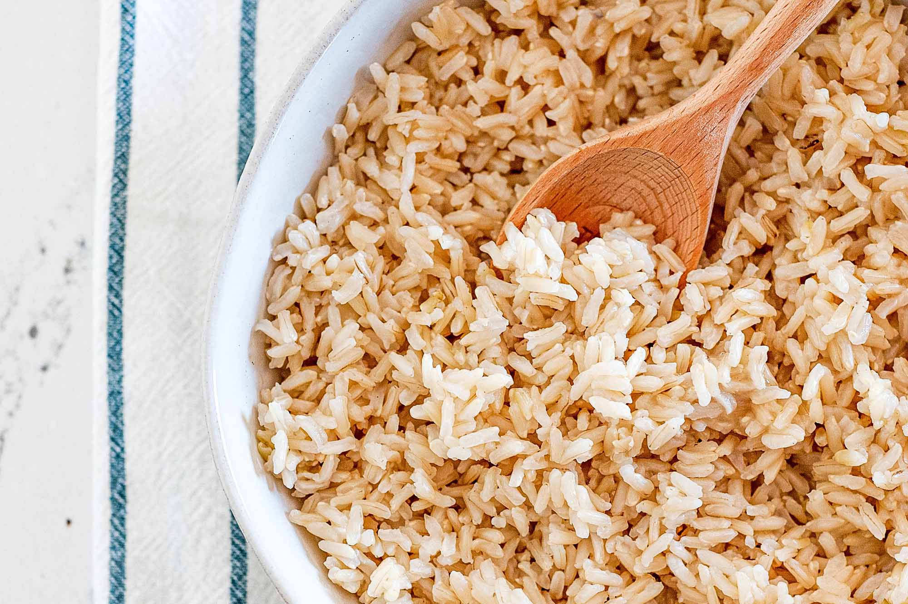

Rice

Brown rice is my favourite rice to eat, plus it is very nutritious and healthier than white rice.
Ingredients
- 2 cups brown rice
- 3 cups water
- 0.5 tbsp salt (optional)
Instructions
- Bring water to boil
- Add salt to water if desired
- When water starts to boil, add rice and cover
- Lower heat to a simmer and leave for 15-20 mins
- Take rice off of heat and fluff with a fork